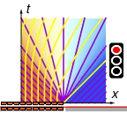

Return to traffic model summary
Cars queued bumper-to-bumper wait at a red traffic light which turns green at t = 0. In symbols,
What happens?

First consider t = 0, x < 0, i.e. the left half of the x-axis, where the cars are initially waiting at full density. Here we have
Thus the characteristics are straight lines with slope -\Vmax, and so the left half of the x-axis extends into a lower-left triangular region ◣ with full density and zero speed:
Next consider t = 0, x > 0, i.e. the right half of the x-axis, which is initially empty. Here we have
Thus the characteristics are straight lines with slope +\Vmax, and so the right half of the x-axis extends into a lower-right triangular region ◢ with zero density and full speed:
What about the remaining triangular region ▼ in the middle?
Well, we haven't yet looked at the origin t = 0, x = 0. There we have an instantaneous jump from maximum density to zero density, so we have
Thus we get a fan of characteristics emanating from the origin, with slopes running from -\Vmax up to +\Vmax. In particular, the characteristic for a given density N is given by
Therefore for the central triangular region ▼ we have
The main results are:
Does this happen in real life?
Yes, the further back you are in the queue,
the longer you need to wait before you can go.
Does this happen in real life?
Well, roughly. In the model, the first car is able to accelerate instantly
from zero to the speed limit;
this isn't possible in real life.
If you're not first-in-line though, the model is pretty fair;
in my experience I am usually in second or third gear
by the time I pass the stop line for a traffic light in a 60kph zone.